Tutorial 1 - Creating Apps#
In this tutorial you will:
Create a UI for a simple app in Qt Designer
Add some formatted text to the UI
Convert the UI to the view Python file
Launch and test the app.
In this tutorial we will make a super simple app whose sole purpose is to learn our workflow. Throughout these tutorials we will design a UI in Qt Designer and then convert it to a Python file that we can use with the boilerplate code downloaded from the repo. This process will be the same irrespective of the complexity of the app.
Meet Qt Designer#
Qt Designer is a drag a drop UI creator. It is easy to underestimate how complex UIs can be. Just knowing the range of available components is a challenge. let along dealing with layout tools and resizing of windows. Having a visual representation of what your UI will look like makes life so much easier. So lets meet Qt Designer. Go ahead and launch it.
New Form Dialogue#
When Qt Designer first opens, it displays the New Form dialogue. This can be used to create different windows, as well as open previous UI files and access your recent designs.
To get started:
Make sure that Main Window is selected
Click the Create button
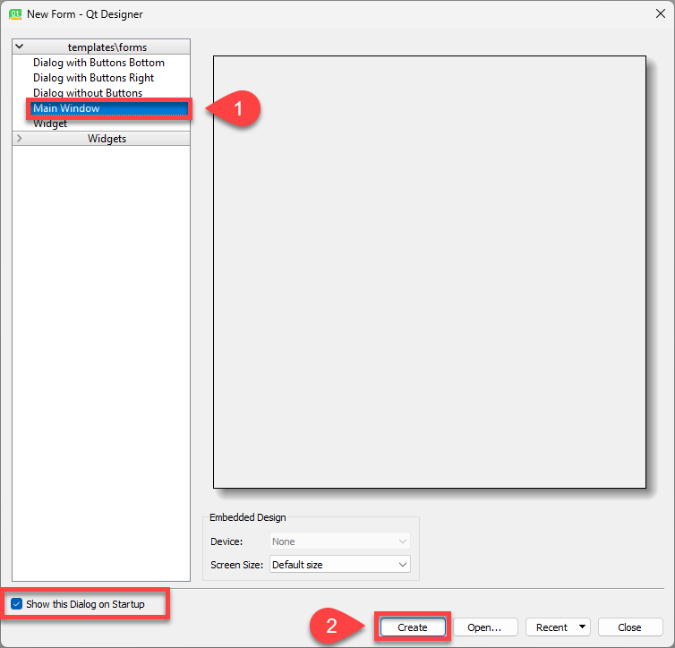
Qt Designer Interface#
Next your will see Qt Designer’s interface.
These tutorials will only be using four parts of the interface:
Widget Library - this contains all of Qt’s UI components.
Window Canvas - this is the window you’re designing.
Object Inspector - shows all the components that make up the window. It also shows which components are nested inside other components.
Property Editor - this is where you can change the properties of the selected component.
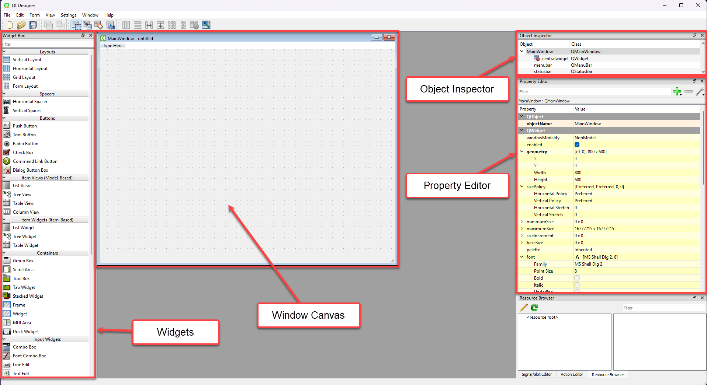
We don’t the Resource Browser, the Action Editor or the Signal/Slot Editor in the lower right corner. So feel free to close them if you want more screen real-estate.
A word on widets
Qt calls everything widgets. All windows are widgets. All textboxes are widgets. All layout components are widgets. These tutorials will use more specific terminology, but you will need to remember widgets if you look for information elsewhere.
First App#
Time to make your first app, a classic Hello World!.
Adjust window#
At the top is a of the screen there is a menu placeholder. This window won’t have a menu, so we will remove that placeholder.
Right mouse click where is says Type Here
Click on Remove Menu Bar
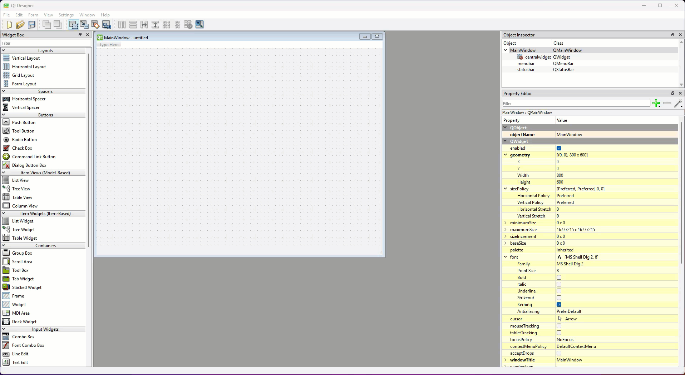
Next we will change the geometry (size) of the window.
In the Property Editor change width to 400
Then change height to 300
Expanding Property Editor
If your Property Editor looks different to the examples in these tutorials, you may need to expand sections. For example, if you can’t see width and height you may need to expand the geometry section by clicking on the > to the right of geometry.
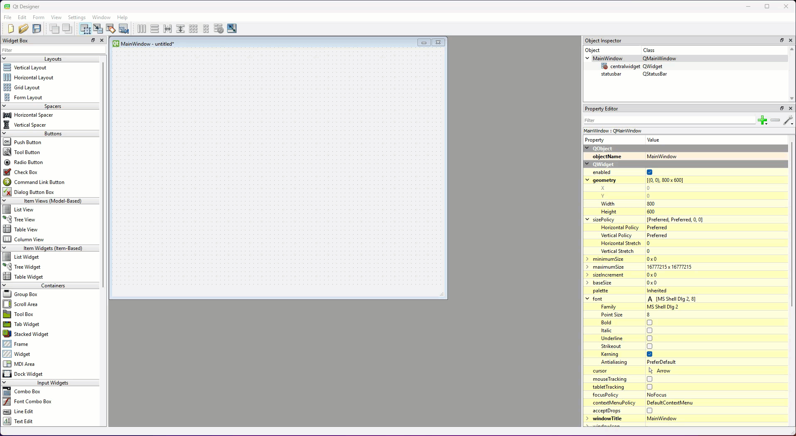
Finally, we will change the title of the window.
In the Property Editor scroll down until you see windowTitle
Change the value from MainWindow to Tutorial 1
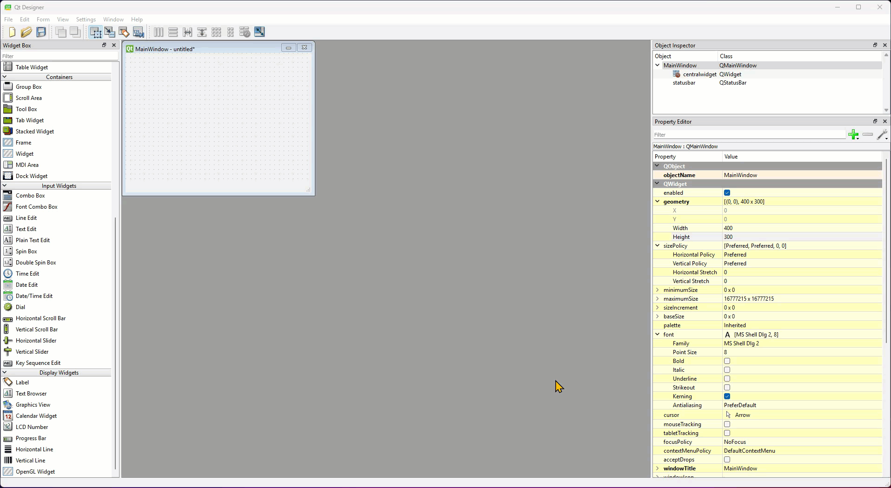
Naming conventions
We learnt in the introduction that Qt is written in C++. C++ uses the camelCase naming convention, as opposed to Python’s snake_case. You will find that any variable, method or property will use camelCase, for example windowTitle.
Add a label#
Now we will add our label.
Scroll the Widget Menu down until you see the Display Widgets
Locate the Label widget onto the Window Canvas
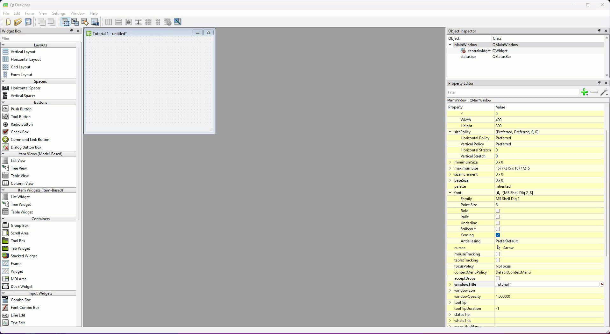
The label needs to say something.
Double click on the label to edit it
Type Hello World!
Click on the Window Canvas away from the label to deselect it
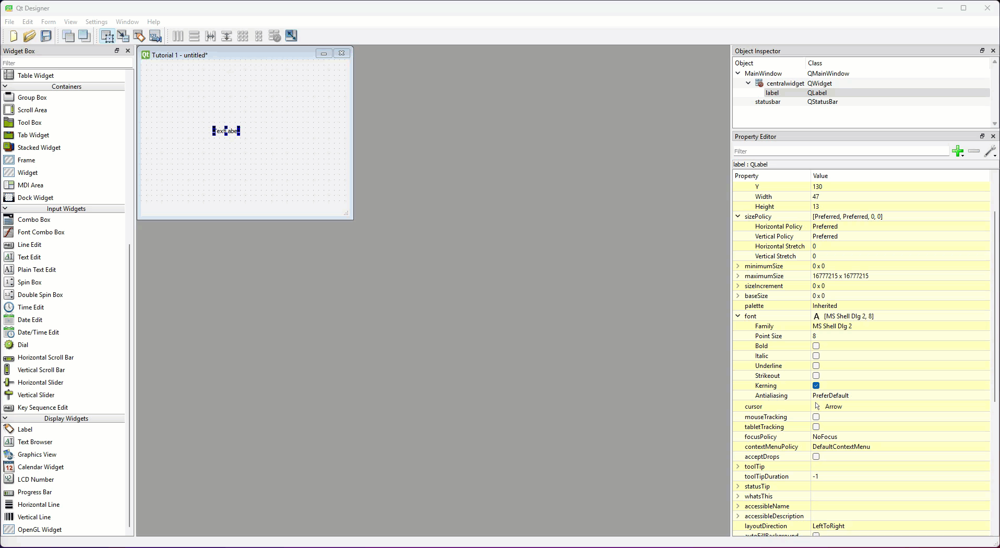
That message is too hard to see.
Find font in the Property Editor
Change the Point Size to 20
Grab the label’s blue resize handles and resize the label so it can be read
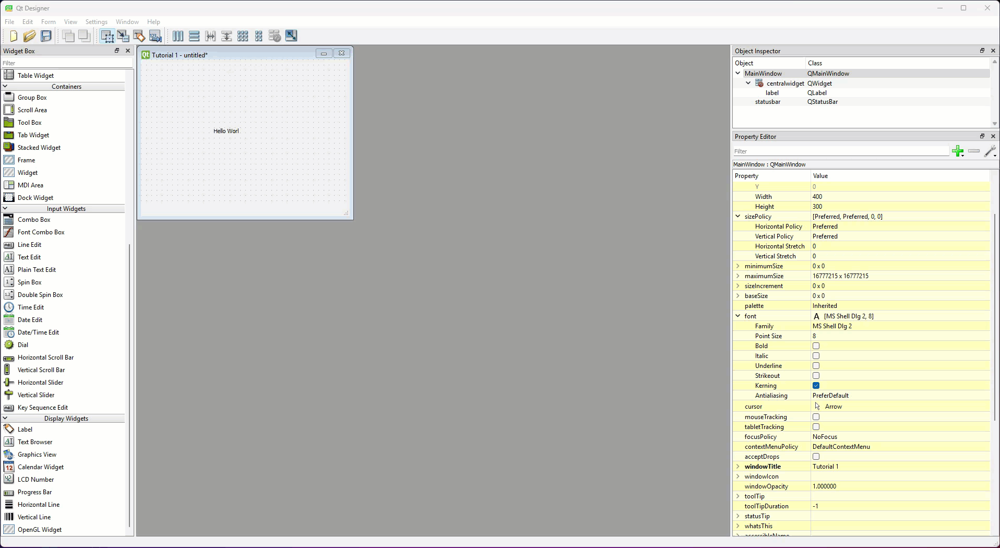
Save the UI file#
Time to save the UI. It is important to save the UI file in the same directory (folder) as your main_window.py, ie. your repo for these tutorials.
Select Save from the File menu
Navigate to your repo with your main_window.py file
Name the file tutorial_01.ui
Convert UI file#
Now we need to convert the UI file to a Python file, and we will do this in VS Code.
If you don’t have VS Code open from the setup.
Go to GitHub Desktop
Navigate to the repo for these tutorials
Choose Open in Visual Studio Code
Is everything ready?
Check that the tutorial_01.ui file is in your file panel.
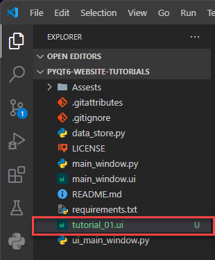
Convert the file
Open a new terminal
At the prompt, type
pyuic6 -o ui_main_window.py -x tutorial_01.uiThen press enter
The convert command
Let’s break down that file converting command:
pyuic6→ the command that convert the file it stands for python ui file converter for PyQt6-o ui_main_window.py→ designates the output file-x tutorial_01.ui→ designates the source file
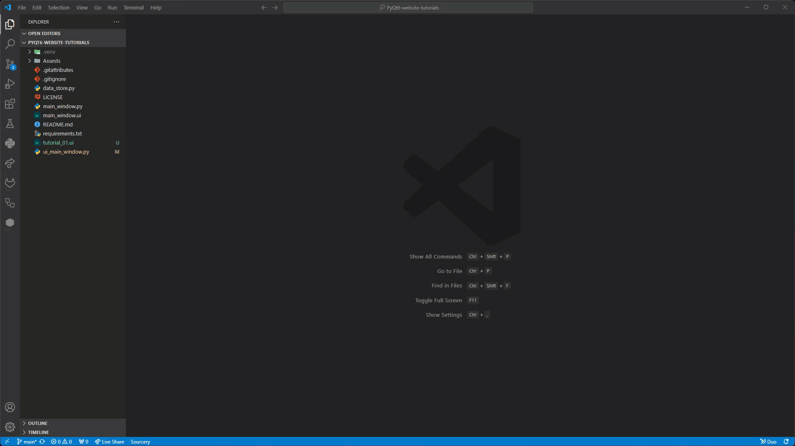
Time to run the app and check that it all works
Open the main_window.py
Run the code
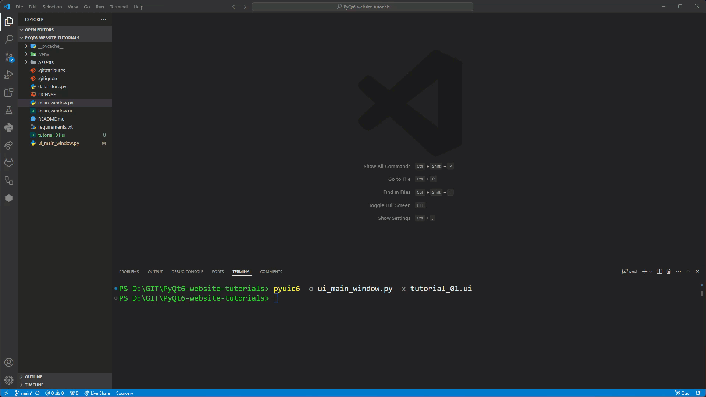
Conclusion#
Congratulations, you just made your first PyQt apps. It may have been simple, but you learn some important processes that we will use over and over again during these tutorials.
Next tutorial we will build on these and learn more about the Label widget.